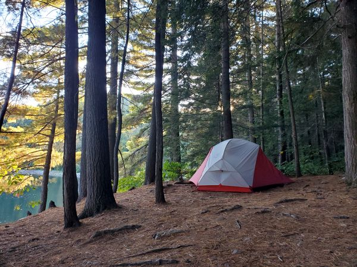
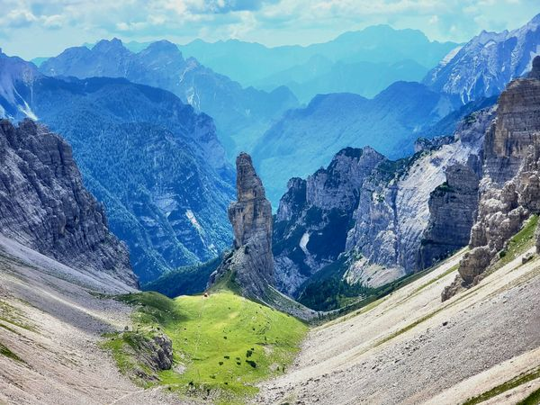
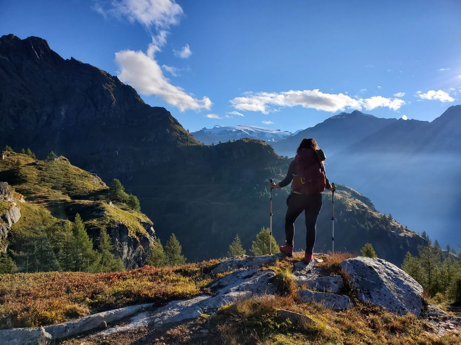
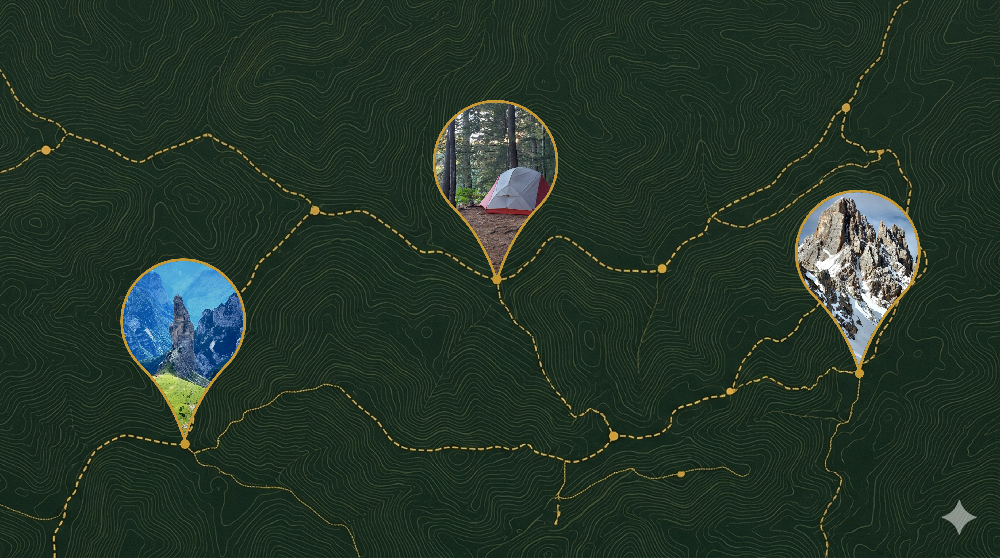
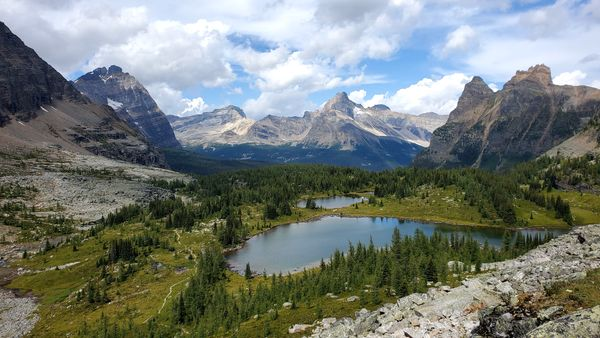
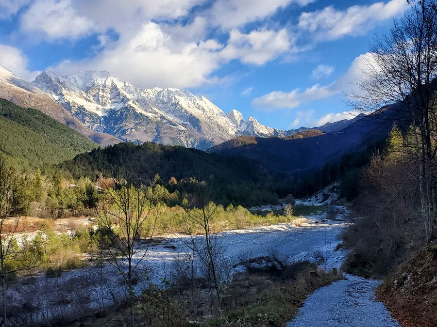

5 stages
Killarney Provincial Park - La Cloche Silhouette Trail
hardA rugged 5-day backpacking loop through Killarney Provincial Park, known for its white quartzite ridges, clear lakes, and dense boreal forest.

GPX.CATALOG / TRAIL NOTES
Thoughtful routes, honest trail details, and the photographs that make a day outside stay with you.
Handpicked routes
5 stages
A rugged 5-day backpacking loop through Killarney Provincial Park, known for its white quartzite ridges, clear lakes, and dense boreal forest.

4 stages
A rugged 4-day loop around the wild dolomites of the Friuli-Venezia-Giulia region.

Find your next line

Recently added
81.8 km / hard
A rugged 5-day backpacking loop through Killarney Provincial Park, known for its white quartzite ridges, clear lakes, and dense boreal forest.

13.9 km / hard
A stunning day hike loop around Lake O'Hara with two epic ascents.
